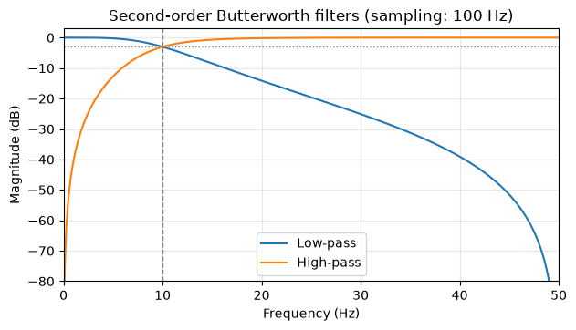

Butterworth Coefficient Table#
In this section, we are going to do the following activities:
generate the normalized Butterworth coefficients by using SymPy
obtain the continuous-time low-pass and high-pass transfer functions
apply the bilinear transform to obtain the digital filter coefficients
check our digital coefficients against SciPy
This table extends the second-order Butterworth examples in the Digital Low-Pass Filter and Digital High-Pass Filter chapters.
This chapter provides the continuous-time Butterworth prototype used in the Digital Low-Pass Filter and Digital High-Pass Filter chapters. The normalized prototype has a cutoff of \(1\;\mathrm{rad/s}\); we scale it to \(\omega_c\) before applying the bilinear transformation.
Required Imports#
Normalized Butterworth Polynomial#
The Butterworth filter has a maximally flat magnitude response in the passband. For a normalized analog low-pass filter, the cutoff angular frequency is \(1\;\mathrm{rad/s}\).
We write its denominator as
For the stable Butterworth prototype, the polynomial can be constructed from first- and second-order factors:
The factors select only the left-half-plane poles. We can generate the polynomial with SymPy rather than looking up its coefficients in a printed table.
def butterworth_polynomial(n, variable=p):
if not isinstance(n, int) or n < 1:
raise ValueError('Filter order must be a positive integer.')
B = variable + 1 if n % 2 else S.One
for k in range(1, n // 2 + 1):
angle = pi * (2*k - 1) / (2*n)
B *= variable**2 + 2*sin(angle)*variable + 1
return expand(B)
for n in range(1, 5):
mprint(r'B_{', str(n), '}(p)=', latex(butterworth_polynomial(n)))
Butterworth Coefficient Table#
The coefficients below are ordered from the highest power to the constant term:
We can generate the table for any order. Here, we use \(n=1,\ldots,8\) and display the coefficients to five decimal places.
table_rows = [r"| Order $n$ | Coefficients $[a_0,a_1,\ldots,a_n]$ |",
"|:---:|:---|"]
for n in range(1, 9):
B = Poly(butterworth_polynomial(n), p)
coefficients = [float(value.evalf()) for value in B.all_coeffs()]
table_rows.append(
f"| {n} | " + ", ".join(f"{value:.5f}" for value in coefficients) + " |"
)
display(Markdown("\n".join(table_rows)))
Order \(n\) |
Coefficients \([a_0,a_1,\ldots,a_n]\) |
|---|---|
1 |
1.00000, 1.00000 |
2 |
1.00000, 1.41421, 1.00000 |
3 |
1.00000, 2.00000, 2.00000, 1.00000 |
4 |
1.00000, 2.61313, 3.41421, 2.61313, 1.00000 |
5 |
1.00000, 3.23607, 5.23607, 5.23607, 3.23607, 1.00000 |
6 |
1.00000, 3.86370, 7.46410, 9.14162, 7.46410, 3.86370, 1.00000 |
7 |
1.00000, 4.49396, 10.09783, 14.59179, 14.59179, 10.09783, 4.49396, 1.00000 |
8 |
1.00000, 5.12583, 13.13707, 21.84615, 25.68836, 21.84615, 13.13707, 5.12583, 1.00000 |
From the table to a transfer function#
To use the normalized polynomial at an arbitrary cutoff frequency \(\omega_c\), replace \(p\) with \(s/\omega_c\):
Note: \(\omega_c\) is an angular frequency in \(\mathrm{rad/s}\), not Hz. For a continuous-time cutoff frequency \(f_c\) in Hz, \(\omega_c=2\pi f_c\).
def butterworth_analog(n, cutoff=wc, kind='lowpass'):
if kind not in ('lowpass', 'highpass'):
raise ValueError("kind must be 'lowpass' or 'highpass'")
D = expand(cutoff**n * butterworth_polynomial(n, s/cutoff))
N = cutoff**n if kind == 'lowpass' else s**n
return factor(N/D)
H_LP = butterworth_analog(2, wc, 'lowpass')
H_HP = butterworth_analog(2, wc, 'highpass')
mprint(r'H_{\mathrm{LP}}(s)=', latex(H_LP))
mprint(r'H_{\mathrm{HP}}(s)=', latex(H_HP))
assert simplify(H_LP - wc**2/(s**2+sqrt(2)*wc*s+wc**2)) == 0
assert simplify(H_HP - s**2/(s**2+sqrt(2)*wc*s+wc**2)) == 0
These are precisely the second-order low-pass and standard high-pass Butterworth transfer functions used in our two digital-filter chapters.
Notice that \(1-H_{LP}(s)\) is not the standard second-order Butterworth high-pass filter: its numerator is \(s^2+\sqrt{2}\omega_cs\), rather than \(s^2\). This is why the complementary high-pass example in the other notebook has a different low-frequency slope.
Discretization with Bilinear Transformation#
As in the existing notebooks, we use the Tustin substitution:
Let \(q=z^{-1}\) and define the dimensionless quantity
For a second-order Butterworth filter, multiplying both numerator and denominator by \((1+q)^2\) gives
Thus both filters share the same denominator coefficients.
r = symbols('r', positive=True)
D = expand((1-q)**2 + sqrt(2)*r*(1-q)*(1+q) + r**2*(1+q)**2)
N_LP = expand(r**2*(1+q)**2)
N_HP = expand((1-q)**2)
a0 = Poly(D, q).nth(0)
a = [factor(Poly(D, q).nth(i)/a0) for i in range(3)]
b_lp = [factor(Poly(N_LP, q).nth(i)/a0) for i in range(3)]
b_hp = [factor(Poly(N_HP, q).nth(i)/a0) for i in range(3)]
# One complete subscript: b_{LP,0}, not b_{LP}_{0}.
for name, values in [('a', a), ('LP', b_lp), ('HP', b_hp)]:
for i, value in enumerate(values):
if name == 'a':
lhs = rf'a_{{{i}}}'
else:
lhs = rf'b_{{\mathrm{{{name}}},{i}}}'
mprint(lhs, ' = ', latex(value))
The Difference Equation#
With the digital transfer function written as
we get
This is the same second-order difference equation already implemented in the low-pass and high-pass notebooks. Only the numerator coefficients change between the two filters.
Numerical Example#
Let the sampling frequency be \(f_s=100\;\mathrm{Hz}\), and the required digital cutoff frequency be \(f_c=10\;\mathrm{Hz}\).
The bilinear transform warps the frequency axis. If the digital filter must have its \(-3\;\mathrm{dB}\) cutoff at exactly \(f_c\), we use the prewarped analog cutoff frequency:
The original notebooks use the bilinear substitution without prewarping. That is also valid, but then the digital cutoff frequency is shifted slightly.
fs, fc = 100.0, 10.0
r_value = np.tan(np.pi * fc / fs)
coef = lambda exprs: np.array([float(v.subs(r, r_value)) for v in exprs])
a_num = coef(a)
b_lp_num = coef(b_lp)
b_hp_num = coef(b_hp)
print('Denominator a:', np.round(a_num, 8))
print('Low-pass b: ', np.round(b_lp_num, 8))
print('High-pass b: ', np.round(b_hp_num, 8))
for kind, b in [('lowpass', b_lp_num), ('highpass', b_hp_num)]:
expected_b, expected_a = signal.butter(2, fc, btype=kind, fs=fs)
np.testing.assert_allclose(b, expected_b, atol=1e-12)
np.testing.assert_allclose(a_num, expected_a, atol=1e-12)
print(kind, ': coefficients match scipy.signal.butter()')
Denominator a: [ 1. -1.1429805 0.4128016]
Low-pass b: [0.06745527 0.13491055 0.06745527]
High-pass b: [ 0.63894553 -1.27789105 0.63894553]
lowpass : coefficients match scipy.signal.butter()
highpass : coefficients match scipy.signal.butter()
Frequency Response#
We can also check the cutoff frequency directly. The second-order low-pass filter and the standard second-order high-pass filter must both have magnitude \(1/\sqrt{2}\) (approximately \(-3.01\;\mathrm{dB}\)) at the cutoff.
fig, ax = plt.subplots(figsize=(7, 3.6))
for label, b in [('Low-pass', b_lp_num), ('High-pass', b_hp_num)]:
freq, h = signal.freqz(b, a_num, worN=2048, fs=fs)
ax.plot(freq, 20*np.log10(np.maximum(abs(h), 1e-12)), label=label)
idx = np.argmin(abs(freq-fc))
assert abs(20*np.log10(abs(h[idx])) + 3.0103) < 0.06
ax.axvline(fc, linestyle='--', linewidth=1, color='gray')
ax.axhline(-3.0103, linestyle=':', linewidth=1, color='gray')
ax.set(xlabel='Frequency (Hz)', ylabel='Magnitude (dB)',
title='Second-order Butterworth filters (sampling: 100 Hz)')
ax.set_xlim(0, fs/2)
ax.set_ylim(-80, 3)
ax.grid(True, alpha=0.3)
ax.legend()
plt.show()

Higher-Order Digital Butterworth Filters#
The coefficient table gives us the analog prototypes for any order. To obtain a digital filter of order \(n\), we use the same bilinear transform and normalize the resulting coefficients.
For higher orders, directly implementing one large difference equation can introduce numerical errors. In practice, digital filters of higher order are often implemented as cascaded second-order sections (SOS).
sos = signal.butter(6, fc, btype='lowpass', fs=fs, output='sos')
print('Sixth-order low-pass Butterworth: cascaded second-order sections')
print('Each row: [b0, b1, b2, a0, a1, a2]')
print(np.round(sos, 7))
Sixth-order low-pass Butterworth: cascaded second-order sections
Each row: [b0, b1, b2, a0, a1, a2]
[[ 3.4050000e-04 6.8110000e-04 3.4050000e-04 1.0000000e+00
-1.0320694e+00 2.7570790e-01]
[ 1.0000000e+00 2.0000000e+00 1.0000000e+00 1.0000000e+00
-1.1429805e+00 4.1280160e-01]
[ 1.0000000e+00 2.0000000e+00 1.0000000e+00 1.0000000e+00
-1.4043849e+00 7.3591520e-01]]
Summary#
Butterworth coefficient table: fixed for each normalized analog order \(n\).
Analog low-pass and high-pass: obtained from the same polynomial \(B_n\) by changing the numerator and scaling with \(\omega_c\).
Digital filter coefficients: depend on the order, cutoff frequency, and sampling period.
Prewarping: allows the digital cutoff to match the requested frequency after the bilinear transform.
Higher-order implementations: prefer SOS for numerical robustness.